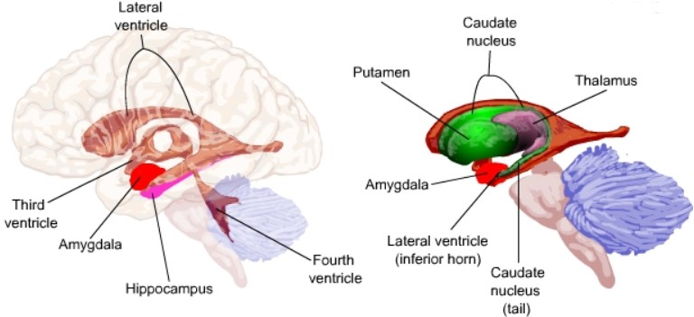

Depression
Depression is a mental health disorder characterized by persistent feelings of sadness, loss of interest in daily activities, and decreased energy. It affects emotional, physical, and cognitive well-being, and can have long-term effects if untreated.

What Part of the Brain Does It Affect?
- Hippocampus: Essential for memory and learning, it can shrink under prolonged depression.
- Amygdala: Processes emotions like fear and sadness, becoming overactive during depression.
- Prefrontal Cortex: Controls decision-making and focus, which are impaired during depression.
What Hormones Are Involved?
- Serotonin: A neurotransmitter critical for mood regulation; low levels are strongly linked to depression.
- Dopamine: Reduced levels decrease motivation and pleasure, worsening depressive symptoms.
- Cortisol: Elevated cortisol levels can damage brain areas like the hippocampus, exacerbating depression.
Effects of Depression
- Short-Term Effects: Fatigue, reduced focus, and emotional instability.
- Long-Term Effects: Chronic sadness, hopelessness, and physical health decline.
Common Signs of Depression
- Persistent feelings of sadness or emptiness.
- Difficulty concentrating or making decisions.
- Loss of interest in hobbies or daily activities.
- Physical symptoms like fatigue or sleep disturbances.
Here Are Some Tips on How to Overcome Depression
Habits
Set Small Goals: Accomplishing manageable tasks builds confidence and a sense of achievement.
Engage in Physical Activity: Exercise releases endorphins that improve mood. Activities like walking, swimming, or yoga are beneficial.
Light Therapy: Exposure to natural sunlight or using light boxes can reduce symptoms of seasonal depression.
- Maintain a consistent sleep routine to improve energy and mood.
- Seek support from trusted friends, family, or therapists.
Foods
- Omega-3 Fatty Acids: Found in fish, flaxseeds, and walnuts, these support brain health and reduce inflammation.
- Vitamin D: Deficiency in Vitamin D is linked to depression. Found in fortified dairy products and sunlight.
- Antioxidants: Found in fruits and nuts, they combat oxidative stress linked to mood disorders.
Bible Verse
"The Lord is near to the brokenhearted and saves the crushed in spirit." – Psalm 34:18
Inspirational Quote
"Out of difficulties grow miracles." – Jean de La Bruyère
References
- National Institute of Mental Health
- American Psychological Association
- PubMed
- Mayo Clinic